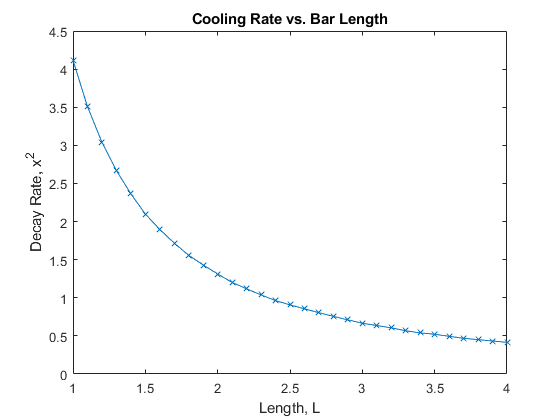
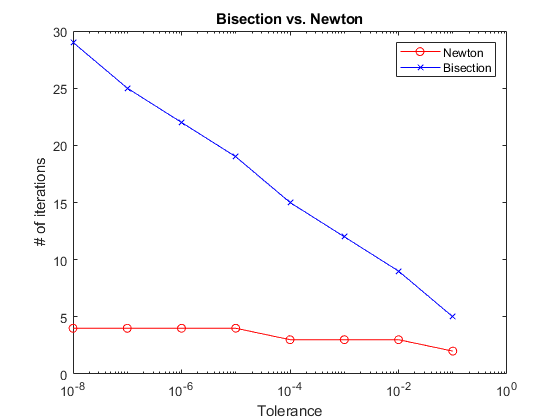

Contents
% Pierce Zhang, CMOR220, Fall 2023, Project 2: Root finding methods % cooldrive.m % Implements the Newton's method and the bisection method to find the % square of the least positive root of a cooling function to 1) simulate % heat dissipation from a metal rod and 2) compare the efficiencies (# of % iterations) between the two algorithms on different epsilon (tolerance) % levels. % Last modified: 18 September 2023 % Driver function function cooldrive()
SECTION ONE: BISECTION FOR BAR COOLING %%
Set bounds of bisection search [a,b], epsilon (t), and range of L from the cooling equation to solve for x.
a = 0.1; b = 3; t = 0.01; L = 1 : 0.1 : 4; % The right bound must tighten towards the left bound as L increases % because the bisection method only returns the greatest root within % a given range, but we want the smallest root. x = zeros(0,length(L)); % Preallocate blank vector for cnt = 1:length(L) [x(cnt), iter] = debis(a,b,t,L(cnt)); b = b - 0.05; % Reduce b to tighten range; b will reach a at end end % Plot x^2 (the square of the roots from bisection) vs. L figure() plot(L, x.^2, "-x") title("Cooling Rate vs. Bar Length") xlabel("Length, L") ylabel("Decay Rate, x^2") clear
SECTION TWO: NEWTON VS BISECTION
Set bounds of search [a,b], L, and x0, initial value for using the Newton's method. Sets t to an array of tolerances from 10^-1 to 10^-8, dividing by 10 each time.
L = 1; a = 0.1; b = 3; x0 = (a+b)/2; t = 10.^-(1:8); % Preallocates two vectors, x_bis for bisection results and x_newt for % Newton's method results x_bis = zeros(0,length(t)); x_newt = zeros(0,length(t)); for cnt = 1:length(t) [~,x_bis(cnt)] = debis(a,b,t(cnt),L); % Store only # of iterations [~,x_newt(cnt)] = denewt(x0,t(cnt),L); end % Plot number of iterations of each of Newton's method and bisection % method against t, the given episilon (tolerance) figure() semilogx(t, x_newt, "-o","Color",'r'); hold on semilogx(t, x_bis, "-x","Color",'b'); hold on title("Bisection vs. Newton") xlabel("Tolerance") ylabel("# of iterations") legend("Newton","Bisection")
end % Inputs: x (x0), the value at which to begin searching for the root, t, the % tolerance, and L, the length of the bar which is just a scalar inside the % cooling equation. % Outputs: x, the root estimation, iter, number of iterations function[x,iter] = denewt(x,t,L) %Newtons method, calls coolfun to find value and coolfundx to find %derivative iter = 0; while (abs(coolfun(x,L)) > t) x = x - coolfun(x,L)/coolfundx(x,L); iter = iter + 1; end end % Inputs: a, the left bound of the range to search for the root, b, the % right bound of the same range, forming [a,b], tol, the epsilon % (tolerance), and L, the length of the bar for the equation % Outputs: x, the root estimation, iter, number of iterations % program ran function [x,iter] = debis(a,b,tol,L) % Perform the bisection method iter = 0; while abs(b - a) > tol x = (a + b) / 2; if coolfun(a,L) * coolfun(x,L) < 0 b = x; % Same side -> look on right side of pivot else a = x; % Left side of pivot end iter = iter + 1; end x = (a + b) / 2; end % Inputs, x, arbitrary scalar number, and L, length of the bar used in % cooling equation % Outputs: val, value of the function returned when x and L are inputted. function val = coolfun(x,L) %for a given x and L evaluate "cool" val = sin(x*L) + x*cos(x*L); end % Inputs: arbitrary scalar number, and L, length of the bar used in % cooling equation % Outputs: val, value of the derivative of the function returned when x % and L are inputted. function val = coolfundx(x,L) % evaluate the derivative, with respect to x, of coolfun val = L*cos(x*L) + cos(x*L) - x*L*sin(x*L); end